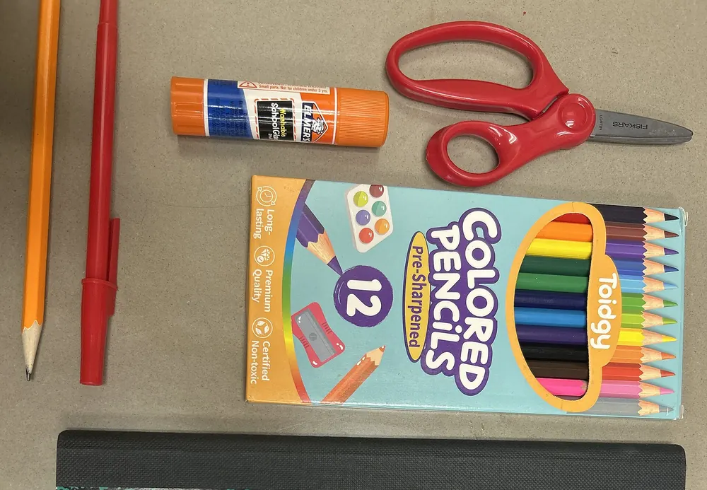

Maternelle
3 à 5 ans · Petite, moyenne et grande section- Éveil, langage et graphisme
- Jeux, musique et motricité
- Premiers mots d’anglais
Un groupe scolaire à Cocody où chaque enfant est connu par son prénom : petits effectifs, suivi individuel et une école où l’on se sent en sécurité.

Chaque cycle garde le même esprit : apprendre avec plaisir, avancer à son rythme et être bien encadré.
22 élèves au maximum par classe, pour que chaque enfant soit vu et entendu.
Un carnet de suivi, des points réguliers avec les parents et un soutien si besoin.
Accueil surveillé, sorties contrôlées et personnel présent à chaque récréation.
Théâtre, football, robotique, musique, anglais et échecs, après la classe.
Un emploi du temps rythmé, avec des pauses et des activités pour que la journée passe vite.
« Ma fille a repris goût à la lecture dès le premier trimestre. On sent que les maîtres connaissent chaque enfant. »
« Le suivi est sérieux et le carnet nous tient au courant. Notre fils est passé en 6e sans stress. »
« Le transport depuis Marcory nous simplifie la vie, et les activités du mercredi ont révélé un vrai goût pour la musique. »
Choisissez le cycle, le nombre d’enfants, la cantine et le transport : le total en FCFA s’affiche, réduction fratrie comprise.
Calculer mes fraisExemple
2 enfants (primaire et collège), avec cantine :
≈ 183 500 FCFA / mois
Réduction fratrie incluse. Tarifs de démonstration.
Dossiers acceptés jusqu’au :
30 juin 2027
Ou réservez une visite de l’école.